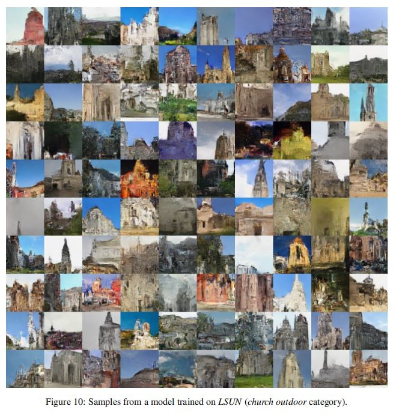
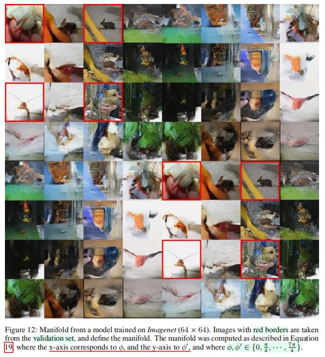

RealNVP
论文标题：Density Estimation Using RealNVP
期刊：ICLR 2017
正文
Abstract
- 概率模型的无监督学习是机器学习中一个重要并具有挑战性的问题。
- 特别地，涉及具有可处理的学习、采样、推断和评估的模型，对于解决上述任务是重要的。
- 本文通过使用实值非体积不变(
Real NVP, Real-Valued Non-Volume Preserving)变换，一组有力、稳定可逆、可学习的变换，扩展了（具有可处理的学习、采样、推断和评估）的模型的空间，并获得了一种具有精确的对数似然计算、精确和高效的采样、精确而高效的隐变量推断以及可理解隐空间的无监督学习算法。 - 作者通过在四个数据集上的采样、对数似然估计和隐变量操作(
manipulation)，展示了模型对自然图片进行建模的能力。
1 Introduction
- 无监督表征学习
- 由于监督学习技巧的改进，表征学习领域经历的巨大的进展。
- 但是，无监督学习有可能充分利用(
leverage)大量无标签数据，并将上述进展应用于原本不实际或不可能实现的模态中。
- 无监督学习与生成概率建模
- 无监督学习一种原则性的方法是生成概率建模。
- 生成概率模型具有创造新内容的能力，并广泛具有与重构相关的应用场景，如：
- 图像修补(
inpainting) - 去噪
- 着色
- 超分辨率
- 图像修补(
- 生成概率建模的挑战
- 由于感兴趣的数据一般是高维、高度结构化的，这一领域的挑战是建立强大到可以捕捉数据复杂性，而同时仍然可以训练的模型。
- 作者通过引入实值非体积不变(
Real NVP, Real-Valued Non-Volume Preserving)变换，一种可处理而由富有表达能力的方法，以对高维数据进行建模，解决上述挑战。
RealNVP模型特点- 该模型可以进行高效、精确的推理、采样和数据点的对数密度估计。
- 此外，本文呈现的架构能通过模型提取的层次化特征，实现对输入图像精确而高效的重建。
2 Related Work
- 概率生成模型(
Probabilistic Generative Models)- 大量研究概率生成模型的工作聚焦于使用最大似然。
- 概率无向图最大似然模型
- 一类最大似然模型由概率无向图(
probabilistic undirected graphs)（如：受限玻尔兹曼机(Restricted Boltzmann Machines)、深度玻尔兹曼机(Deep Boltzmann Machines)）进行描述。 - 此类模型通过其二分图结构(
bipartite structure)中的条件独立性属性，实现了对隐变量后验分布的高效的精确计算或近似计算，从而得以训练。 - 然而，由于与隐变量相关的边际分布计算困难，这些模型的训练、评估和采样过程必须依赖于平均场推断、马尔科夫链蒙特卡罗等方法，但对于此类复杂模型，这些方法的收敛时间是不确定的，通常会生成高度相关的样本。此外，近似计算常常会限制模型的性能。
- 一类最大似然模型由概率无向图(
- 概率有向图最大似然模型
- 通过祖先采样过程进行定义，该过程在概念上、计算上都具有间接性，很有吸引力。
- 然而，它们缺乏无向图结构的条件独立性结构，使得隐变量后验推断的精确或近似计算变得困难。
- 近期在随机变分推断(
stochastic variational inference)和均摊推断(amortized inference)上的进展，允许深度有向图模型通过最大化对数似然的一个变分下界，进行高效的近似推断和学习。 - 特别地，变分自动编码器算法(
variational autoencoder algorithm)通过利用重参数化(reparameterization)技巧，同时学习一个生成网络（映射隐变量\(z\)到样本\(x\)），以及一个与之匹配的近似推断网络（映射\(x\)）到一个具有丰富语义信息的因变量表征\(z\)。 - 它成功利用了近期深度神经网络在反向传播方面的进展，从而被应用于从语音合成到语言建模等多种领域。
- 然而，推理过程的近似限制了模型学习高维深度表征的能力，并激发了近期致力于改进近似推理的工作。
- 近似计算的避免——自回归模型
- 上述近似可以通过完全不使用隐变量进行避免。
- 自回归模型可以实现这一技术，同时通常保持很高的灵活性。
- 此类算法按照固定的维度顺序，使用概率链式法则(
probability chain rule)，将联合分布分解为条件概率的乘积，从而对联合分布进行有效的建模。 - 近期在这个研究方向的工作，利用了近期在循环神经网络（特别是长短时记忆、残差网络）的进展，以学习
SOTA图像生成模型和语言模型。 - 模型的时序性质限制了它的计算效率。
- 例如，模型的采样过程是时序化的、不可并行的，从而在演讲和音乐合成，以及实时渲染等应用中十分耗时。
- 此外，自回归模型没有自然的隐变量表征，并且尚未被证明在半监督学习中有用。
- 生成对抗网络(
GAN, Generative Adversarial Networks)- 生成对抗网络可以通过完全避免最大似然原则，训练任何可微分生成网络。
- 替代做法是，生成网络和判别器网络结合，判别器网络的任务是区别生成样本和真实数据。
- 不同于使用难以处理(
untractable)的对数似然，判别器网络按照对抗方式提供训练信号。 - 成功训练的
GAN模型可以始终如一地(consistently)生成清晰(sharp)并且看起来真实的样本。 - 然而，衡量生成样本多样性的一些指标至今难以处理。
- 此外，训练过程的不稳定性，要求小心的超参数调整，以避免发散的表现。
- 本文解决方法
- 训练生成器网络\(g\)，将隐变量\(z \sim p_Z\)映射到样本\(x \sim p_X\)理论上不需要像
GAN一样判别器网络，也不需要像变分自动编码器一样进行近似推理。 - 事实上，若\(g\)是双射的，则模型可以通过变量替换公式(
change of variable formula)，通过最大似然进行训练：
\(p_{X}(x) = p_{Z}(z)|det(\frac{\partial g(z)}{\partial Z^{T}})|^{-1} \cdots (1)\) - 上述公式已经在一些论文中受到讨论，包括独立成分分析(
ICA, Independent Components Analysis)的最大似然形式、高斯化(gaussianization)以及深度密度模型(deep density models)。 - 正如非线性
ICA解得到存在性证明所表明，自回归模型可以被视为最大似然非线性ICA的易于处理(tractable)的实例，在这种情况下，残差(residual)对应于独立成分(independent components)。 - 然而，直接应用变量替换公式，会产生计算昂贵、
poorly conditioned的模型，因此这种类型的大规模模型尚未得到广泛应用。
- 训练生成器网络\(g\)，将隐变量\(z \sim p_Z\)映射到样本\(x \sim p_X\)理论上不需要像
3 Model Definition
- 在论文中，作者解决的是在高维连续空间中，通过最大似然学习高度非线性模型的问题。
- 为了优化对数似然，作者引入了一类灵活性更高的架构，该架构使用变量替换公式，允许在连续数据上计算对数似然。
- 基于作者的前述工作，作者定义了一类强大的双射函数，这些函数能允许精确、易于处理的密度估计，以及精确、易于处理的推理。
- 此外，由此产生的代价函数不依赖于固定的重构成本形式（如：平方误差），因此能生成更为清晰的样本。
- 并且，这种灵活性有助于充分利用近期在批正则化(
batch normalization)和残差神经网络方面的进展，以定义一个非常深的、带有多个抽象层次的多尺度架构。
3.1 Change of Variable Formula
- 隐变量分布\(Z\rightarrow\)数据分布\(X\)
- 给定一个观测到的数据变量\(x \in X\)，一个关于隐变量\(z \in Z\)的简单先验概率概率分布\(p_{Z}\)，以及一个从\(X\)到\(Z\)的双射函数\(f: x \rightarrow Z\)（反函数：\(g = f^{-1}\)），变量替换公式通过下列公式，定义了在\(X\)上的一个模型分布：
\(p_{X}(x) = p_{Z}(f(x))|det(\frac{\partial f(x)}{\partial x^T})| \cdots (2)\)
\(log(p_{X}(x)) = log(p_{Z}(f(x))) + log(|det(\frac{\partial f(x)}{\partial x^T})|)\cdots (3)\)
其中：\(\frac{\partial f(x)}{\partial x^T}\)是\(x\)上函数\(f\)的Jocabi矩阵。
- 精确采样
- 由此产生分布上的精确采样，可以通过使用逆变换采样法则(inverse transform sampling rule)进行生成。
- 在隐空间中分布\(p_{Z}\)上抽取一个样本，则该样本的逆像(inverse image)\(x = f^{-1}(z) = g(z)\)在原始空间中生成了一个样本。
- 计算点\(x\)的密度，可以通过计算像\(f(x)\)，乘以相关联的Jacobi行列式\(det(\frac{\partial f(x)}{\partial x^T})\)完成。
- 精确和高效的推理，使得模型的精确和快速评估(evaluation)成为可能。
3.2 Coupling Layers
- 计算具有高维定义域(
domain)、陪域(codomain，可能存在值的域)的函数的Jacobi行列式，以及计算大型矩阵的行列式，总体上的计算开销是十分昂贵的。 - 一些工作证明，通过函数\(f\)的仔细设计，一个易于处理、极其灵活的双射模型可以通过学习得到。由于计算变换的
Jacobian行列式对于高效训练极其重要，本文利用了一个简单的观察，即三角矩阵的行列式可被高效计算，即其对角元的乘积。 - 作者将通过一系列简单双射函数的堆叠，建立一个灵活、易于处理的双射函数。
- 在每一个简单双射函数中，输入向量的一部分通过一个易于求逆，但按照复杂方式依赖于输入向量另一部分的函数进行更新。
- 作者将每一个这样的简单双射函数成为一个仿射耦合层(
affine coupling layer)。 - 给定一个\(D\)维输入\(x\)，以及\(d \leq D\)，一个仿射层的输出\(y\)符合以下公式：
\(y_{1:d} = x_{1:d}\cdots (4)\)
\(y_{d + 1: D} = x_{d + 1: D} \odot exp(s(x_{1:d})) + t(x_{1:d})\)
其中：\(s\)和\(t\)分别表示缩放和平移，均为\(R^d \rightarrow\) R^{D - d}的函数；\(\odot\)表示Hadamard积（逐元素乘积）。
3.3 Properties
-
行列式计算、函数灵活性
-
上述变换的
Jacobi矩阵为：
\(\frac{\partial y}{\partial x^T} = \begin{bmatrix} \mathbb{I}_{d \times d} \ \mathbf{0}_{d \times{D - d}} \\ \frac{\partial \mathbf{y}_{d + 1:D}}{\partial \mathbf{x}^T_{1:d}} \ diag(e^{s(\mathbf{x}_{1:d})})\end{bmatrix}\)
其中：\(diag(e^{s(\mathbf{x}_{1:d})})\)表示对角矩阵，其对角元与向量\(e^{s(\mathbf{x}_{1:d})}\)的元素一一对应。 -
注意到上述
Jacobi矩阵是三角矩阵，可以高效计算其行列式，即：\(e^{\sum_{j}s(x_{1:d})_{j}}\)。 -
由于计算耦合层的行列式，不包括计算\(s\)或\(t\)的行列式，因此函数\(s\)和\(t\)可以任意复杂，作者将用深度卷积神经网络实现它们。
-
注意，\(s\)和\(t\)的隐藏层可以拥有比它们的输入、输出层更多的特征。
- 耦合层的可逆属性
- 耦合层在定义概率模型方面的另一个有趣性质是它们的可逆性。
- 事实上，计算逆变换并不比前向传播更复杂，意味着模型的采样可以和推理一样高效。
- 再次注意，计算耦合层的逆变换时，无需计算\(s\)或\(t\)的逆变换，因此函数\(s\)和\(t\)可以是任意复杂、不易求逆的函数。
3.4 Masked Convolution
输入向量的分划（即：将\(x_{1:D}\in \mathbb{R}^D\)分为\(x_{1:d}, x_{d + 1:D}\)），可以通过使用二进制掩码\(b\)实现，使用下列\(y\)的函数形式：
\(y = b \odot x + (1 - b) \odot (x \odot exp(s(b \odot x)) + t(b \odot x))\)
- 作者使用两种分划，以利用图像的局部关联性。
- 空间棋盘模式(spatial checkerboard patterns)
- 逐通道掩码(channel-wise masking) - 空间棋盘模式：当空间坐标的和为奇数时，掩码值为\(1\)；否则值为\(0\)。
- 逐通道掩码\(b\)：对于通道维度的前一半，数值为\(1\)，对于后一半维度，值为\(0\)。
- 对于上述模型，\(s(\cdot), t(\cdot)\)均为整流卷积网络(rectified convolutional networks)。3.5 Combining Coupling Layers- 尽管耦合层是强大的，但是它们的前向变换使得输入的某些部分保持不变。
- 上述困难可以通过以交替方式对耦合层进行组合而解决，使得一个耦合层中不变的组成部分在下一个耦合层中得到变换。

- 由此产生的函数的
Jacobi行列式仍然易于处理，基于下列事实：
\(\frac{\partial (f_b \odot f_a)}{\partial x_a^T}(x_a) = \frac{\partial f_a}{\partial x_a^T}(x_a) \cdot \frac{\partial f_b}{\partial x_b^T}(x_b = f_a(x_a)) \cdots (10)\)
\(det(A \cdot B) = det(A)det(B) \cdots (11)\)
类似地，上述函数的反函数（逆变换）可以容易地由下式计算：
\((f_b\odot f_a)^{-1} = f_a^{-1}\odot f_b^{-1} \cdots (12)\)
3.6 Multi-Scale Architecture
- 作者使用挤压操作(squeezing operation)，实现了一个多尺度的架构： - 对于每个通道，它将图像分为形状\(2 \times 2 \times c\)的子块，然后将它们变形为\(1 \times 1 \times 4c\)形状的子块。 - 挤压操作将\(s \times s \times c\)的张量转化为\(\frac{s}{2} \times {s}{2} \times 4c\)的张量，高效地使用空间大小换取通道数量。
- 在每个尺度，作者将下列几种操作组合为一个序列：
- 首先应用\(3\)个带有交替棋盘掩码的耦合层。
- 然后执行挤压操作。
- 最后，再应用\(3\)个带有交替逐通道掩码(alternating channel-wise masking)的耦合层。
- 选择逐通道掩码，使得产生的分划对于前面的棋盘掩码而言并非冗余。
- 对于最后一个尺度，只使用\(4\)个带有交替棋盘掩码的耦合层。
- 将一个\(D\)维向量传播给所有的耦合层，计算开销、内存开销和需要训练的参数量都是巨大的。基于上述原因，作者在固定的间隔(regular interval)分离(factor out)出一半的维度，并递归定义这一操作：
\(h^{(0)} = x \cdots (13)\)
\((z^{(i + 1), }, h^{(i + 1)}) = f^{(i + 1)}(h^{(i)}) \cdots (14)\)
\(z^{(L)} = f^{(L)}(h^{(L - 1)}) \cdots (15)\)
\(z = (z^{(1)}, \cdots , z^{(L)})\cdots (16)\)
- 在实验中，对于\(i \leq L\)运用上述操作。
- 在计算函数\(f^{(i)}\)时，耦合-挤压-耦合操作序列被应用于每个层次(等式\((14)\))。
- 在每个层次，随着空间分辨率的下降，函数\(s\)和\(t\)中隐藏层特征的数量翻倍。
- 所有从不同尺度提取的变量被合并(concatenated)，以获得最终变换的输出(等式\((16)\))。
- 因此，模型必须对较细(finer)尺度（早期层次）中提取的单元进行高斯化，然后再处理从较粗(coarser)尺度中提取的单元。这使得中间层表征的定义，能够对应到更局部、细粒度的特征，如附录D所示。
- 并且，早期层的高斯化和单元提取，有将损失函数分配到整个网络的实际优势，这一做法遵循了类似于使用中间分类器引导中间层的理念。这一做法也大幅度减少了模型的计算量和内存使用，允许我们训练更大的模型。3.7 批归一化
- 批归一化用于\(s, t\)
- 为了进一步改善训练信号的传递，作者在\(s, t\)中使用带批归一化和权重归一化的深度残差神经网络。如附录
E描述，作者引入并使用了批归一化的一个新型变种，该变种基于最近最小批量的移动平均(a running average over recent minibatches)，因此在极小批量训练时更具健壮性。 - 批归一化用于耦合层输出
- 作者也将批归一化用于整个耦合层的输出。
- 由于批归一化对每个维度进行了线性缩放，因此其作用很容易纳入
Jacobi矩阵的计算。 - 即：给定估计的批量统计特征\(\tilde{\mu}, \tilde{\sigma}^2\)，缩放函数为：
\(x \rightarrow \frac{x - \tilde{\mu}}{\sqrt{\tilde{\sigma}^2 + \epsilon}}\)
其Jacobian行列式为：
\((\Pi_{i}(\tilde{\sigma}_i^2 + \epsilon))^{-\frac{1}{2}}\) - 上述批归一化的形式类似于深度强化学习中的奖励正则化(
reward normalization)。 - 发现
- 作者发现，该技巧的使用不仅允许更多耦合层的堆叠，并缓解了通过基于梯度的方法训练一个带有缩放参数的条件分布时，常常遇到的不稳定问题。
-
4 Experiments
4.1 Procedure
- 学习无界空间上的分布
- 等式
2展示了如何学习无界空间上的分布。 - 一般地，感兴趣数据具有有界的大小。例如，图像像素值在应用推荐的抖动处理后，一般位于\([0, 256]^D\)。
- 为了减少边界效应的影响，作者转而对\(logit(\alpha + (1 - \alpha)\odot \frac{x}{256})\)进行建模，其中此处选取\(\alpha = 0.05\)。
- 作者在计算计算对数似然和
bits/dim结果时，考虑了这一转换。 - 作者也增强了
CIFAR-10, CelebA和LSUN数据集，在训练过程中也包含了训练样本的水平翻转版本。
- 等式
- 数据集
- 作者在
4个自然图像数据集上进行模型训练：CIFAR-10, ImageNet, Large-Scale Scene Understanding(LSUN), CelebFaces Attributes(CelebA)。 - 更精确地，作者在下采样到\(32 \times 32\)和\(64 \times 64\)版本的
ImageNet进行训练。 - 对于
LSUN数据集，作者bedroom, tower, church户外类别进行训练。首先对图像进行下采样，使得最短边为\(96\)像素，然后进行\(64 \times 64\)的随机裁剪。 - 对于
CelebA的数据集，作者首先使用\(148 \times 148\)的近似中心裁剪，然后调整规模为\(64 \times 64\)。
- 作者在
- 模块使用
- 作者使用
3.6部分描述的多尺度架构，以及在耦合层中使用带有整流非线性和跳跃连接的深度卷积残差网络。 - 为了计算缩放函数\(s\)，作者使用双曲正切函数，乘以学习到的缩放因子(
scale)，而平移函数\(t\)具有仿射输出的形式。 - 递归重复多尺度架构，直到最后一个输入为\(4 \times 4 \times c\)的张量。
- 对于由\(32\times 32\)图片形成的数据集，作者在第一个带有棋盘掩码(
checkerboard masking)的耦合层中，使用\(4\)个残差块（有32个隐藏特征图）。 - 批量数(
batch size)设置为\(64\)。 - 对于
CIFAR-10，作者使用\(8\)个残差块，\(64\)个特征图，以及仅一次尺度缩小(downscale)。 - 作者使用默认参数
ADAM优化器，并针对权重缩放参数，使用系数为\(5 \cdot 10^{-5}\)的\(L_2\)正则化。
- 作者使用
- 分布
- 将先验分布\(p_{Z}\)设置为各向同性的(
isotropic)单位范数高斯分布。 - 然而，任何分布均可用于\(p_{Z}\)，包括在训训练过程中学习到的分布，例如来自自回归模型的分布，或者来自（训练目标进行过轻微调整的）变分自动编码器的分布。
- 将先验分布\(p_{Z}\)设置为各向同性的(
4.2 Results
number of bits per dimension
- 作者在表
1中展示了number of bits per dimension结果，尽管没有基于Pixel RNN基准线进行改进，但与其余生成方法相比是具有竞争力的。 - 作者注意到，随着参数量的增加，模型表现也在提升，更大的模型可能进一步提升性能。
- 对于
CelebA, LSUN数据集，在训练过程中，验证集的bits per dimension在逐步下降，因此几乎没有过拟合的可能。
- 作者在表
- 样本生成
- 图
5展示了模型生成的样本，并与数据集中的训练样本进行对比。 - 在有限样本容量(
capacity)的设定下，最大似然更看重样本的多样性，而非样本质量。因此，作者提出的模型有时会产生一些可能性很小(highly improbable)的样本，这一点在CelebA数据集上尤其明显。 - 与变分自动编码器相反，作者提出的模型生成的样本不仅看上去全局连贯(
globally coherent)，而且清晰。 - 作者对此的假说：与这些模型相反，
RealNVP不依赖于固定形式的重构开销（如L2范数），这些重构开销倾向于过度奖励低频成分，对高频成分则奖励不足。 - 与自回归模型不同，作者提出模型的采样可以非常高效地完成，因为它在输入维度上进行了并行化。
- 在
Imagenet和LSUN数据集上，作者提出的模型似乎较好地捕捉了前景、背景信息，以及光照相互作用（如：亮度、反射和阴影的一致的光源方向）
- 图
- 隐变量语义
- 作者也解释了所研究的隐变量具有平滑、语义连续的属性(
the smooth semantically consistent meaning of out latent variables)。 - 在隐空间中，作者基于
4个验证样本\(z_{(1)}, z_{(2)}, z_{(3)}, z_{(4)}\)定义了一个流形，并由\(\phi, \phi'\)进行参数化：
\(z = cos(\phi)(cos(\phi')z_{(1)} + sin(\phi')z_{(2)}) + sin(\phi)(cos(\phi')z_{(3)} + sin(\phi')z_{(4)})\)。 - 作者通过计算\(g(z)\)，将流形投影回到数据空间。图
6展示了相关结果。 - 作者观察到：模型似乎在隐空间的组织上，形成了一种远远超越像素空间差值的含义。
- 更多的可视化在附录中展示。
- 为了进一步测试因空间是否有一致性的语义理解，作者在
CelebA数据集上训练了一个类别-条件化(class-conditional)模型，并发现：学习到的表征在不同的类别标签之间，具有一致性的语义。
- 作者也解释了所研究的隐变量具有平滑、语义连续的属性(
5 Discussion and Conclusion
- 工作总结
- 本论文中，作者定义了一类带有易于处理的雅可比行列式的可逆函数，允许精确的、易于处理的对数似然评估、推理和采样。
- 作者展示了此类生成模型实现了在采样质量和对数似然方面都具有竞争力的性能。
- 存在许多研究途径，以改进变换函数的形式，例如充分利用空洞卷积、残差网络架构的最新进展。
- 模型特点
- 本文提出了一种弥补自回归模型、变分自动编码器和生成对抗网络之间差距的技术。
- 类似于自回归模型，该模型允许训练过程中进行易于处理的、精确的对数似然计算。
- 该模型允许更为灵活的函数形式，类似于扁粉自动编码器的生成模型，允许从模型分布进行快速、精确的采样。
- 类似于
GAN，与变分自动编码器不同，作者提出的技术不需要固定形式的重构开销，而是用更高层次的特征定义了重构开销，并生成了更为清晰的图片。 - 与变分自动编码器、
GAN均不同，作者提出的技术能够学习一个具有丰富语义信息，并且维度和输入空间一样高的隐空间。这可能使该算法尤其适合半监督学习任务，作者也希望在未来工作中进行相关的研究。
RealNVP模型的条件化RealNVP生成模型可以通过额外变量（如：类型标签）进行条件化，以创建一个结构化的输出算法。- 更重要的是，由此产生的可逆变换类可以模块化地视为概率分布，因此可逆变换类也可被用于改善其余概率模型，如自回归模型、变分自动编码器等。
- 对于自动编码器，上述变换可以用于获得更灵活的重构开销，以及一个更灵活的随机推断分布(
stochastic inference distribution)。 - 一般地，概率模型也能从本文应用的批归一化技术中受益。
RealNVP在其他方向的贡献- 强大、可训练的可逆函数的定义也可以有利于生成式无监督学习以外的其他方向。
- 例如在强化学习中，这些可逆函数有助于扩展连续
Q学习中易于处理argmax操作的函数集合，或者寻找局部线性高斯近似更为适用的表征。
附录
A Samples
下列分别为四个数据集上的训练样本。


B Manifold


C Extrapolation
- 受到以往纹理生成工作，以及
DCGAN的外推测试的启发，作者通过生成大小为数据集中两倍或十倍的图片，评估了模型捕捉到的统计信息。 - 作者在下列图片中观察到，提出的模型成功地创建了数据集的“纹理”表征，同时保持了图片的空间平滑性。
- 提出模型的卷积架构仅仅通过卷积的边缘效应对像素位置进行认识，因此提出的模型类似于一个稳定过程。这也解释了为什么在
LSUN数据集（训练数据由随机裁剪获得）上训练后样本更加一致。
D Latent Variables Semantic
- 如图
22所示，作者通过消融实验，进一步尝试理解学习到的隐变量的语义。 - 如下图所示，隐空间语义似乎更多地体现在图形层面，而不是更高层次的概念。
- 尽管卷积的大量使用，通过充分利用图像先验知识对学习效果进行了改善，它也可能需要为上述局限性负责。